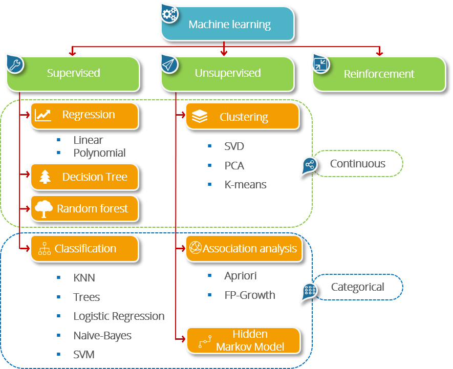

Machine learning is sub-categorized to three types:
- Supervised Learning – Train Me!
- Unsupervised Learning – I am self sufficient in learning
- Reinforcement Learning – My life My rules! (Hit & Trial)
What is Supervised Learning?
Supervised Learning is the one, where you can consider the learning is guided by a teacher. We have a dataset which acts as a teacher and its role is to train the model or the machine. Once the model gets trained it can start making a prediction or decision when new data is given to it.
What is Unsupervised Learning?
The model learns through observation and finds structures in the data. Once the model is given a dataset, it automatically finds patterns and relationships in the dataset by creating clusters in it. What it cannot do is add labels to the cluster, like it cannot say this a group of apples or mangoes, but it will separate all the apples from mangoes.
Suppose we presented images of apples, bananas and mangoes to the model, so what it does, based on some patterns and relationships it creates clusters and divides the dataset into those clusters. Now if a new data is fed to the model, it adds it to one of the created clusters.
What is Reinforcement Learning?
It is the ability of an agent to interact with the environment and find out what is the best outcome. It follows the concept of hit and trial method. The agent is rewarded or penalized with a point for a correct or a wrong answer, and on the basis of the positive reward points gained the model trains itself. And again once trained it gets ready to predict the new data presented to it.
